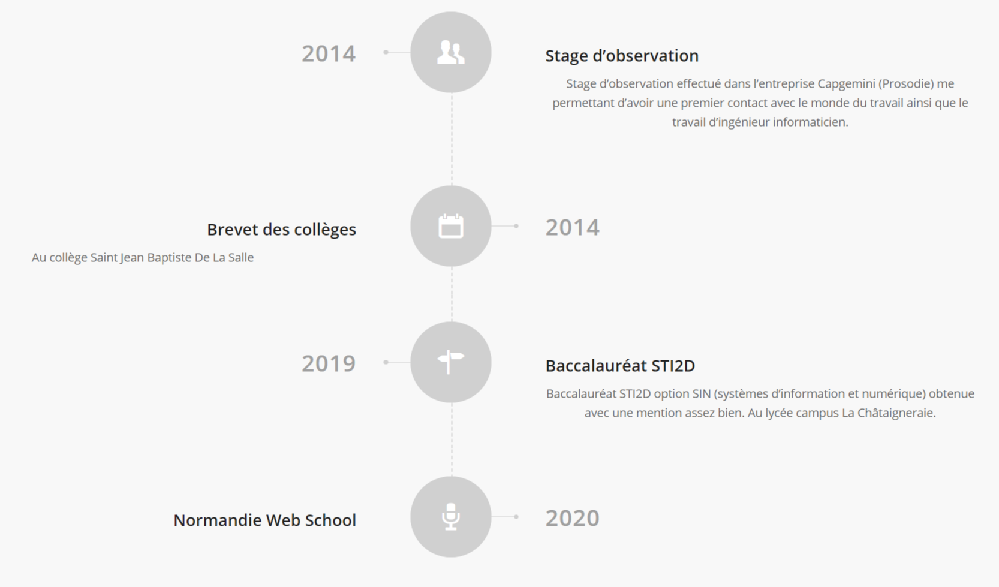
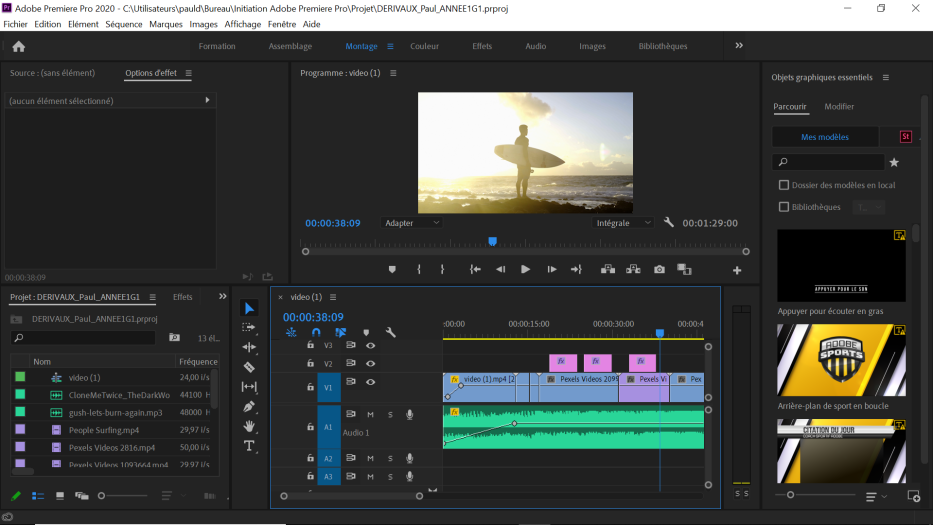
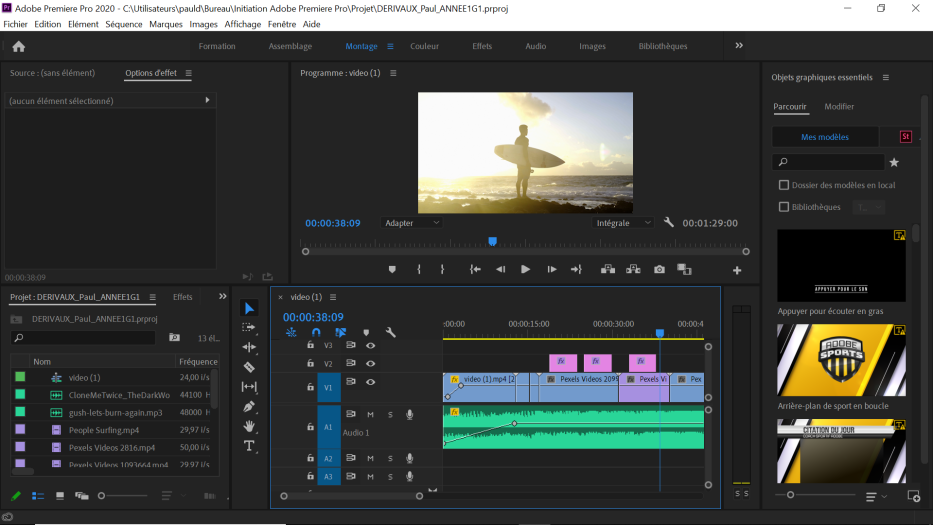

BIOGRAPHIE

Je m’appelle Paul Derivaux et j’ai 19 ans.
Je suis passionné par l’informatique et les nouvelles technologies au sens général et plus précisément par le développement web.
C’est pour cela que j’ai décidé d’intégrer le bachelor de la Normandie Web School (Chef de projet digital) pour acquérir de nombreuses connaissances dans ce domaine.
Par la suite je souhaite continuer mes études dans un master.
« L’excellence est un art que l’on n’atteint que par l’exercice constant. Nous sommes ce que nous faisons de manière répétée.
L’excellence n’est dans pas une action mais une habitude. »
Aristote

L'informatique ainsi que les nouvelles technologies ont toujours fait partie de ma vie.
Etant petit je regardais mon père faire du codage ainsi que de nombreux projets en électronique. Je comprenais rarement ce qu'il faisait mais cela m'impressionnait à chaque fois et je rêvais de faire la même chose en grandissant.
C'est seulement depuis peu que je commence sérieusement à coder grâce au différent projet scolaire mais aussi personnel que j'entreprends.
J'ai d'autres passions tel que l'automobile, la musique mais aussi les sports de glisse (skate,surf,snowbaord...)
MON PARCOURS
MES ARTICLES

 
